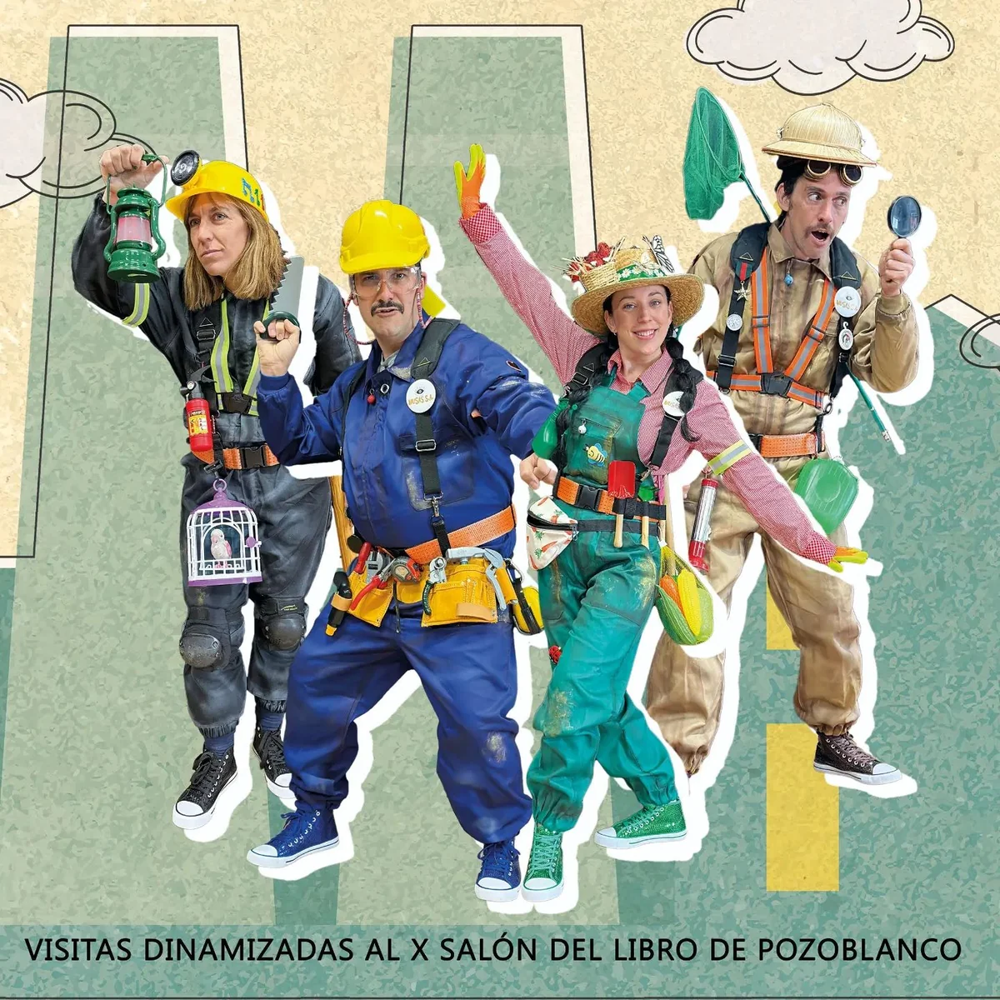
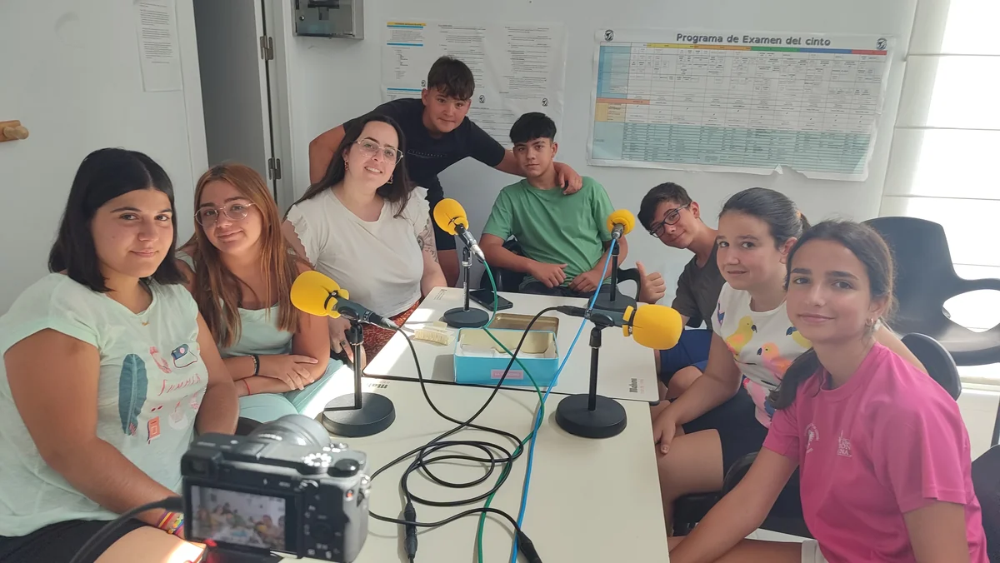
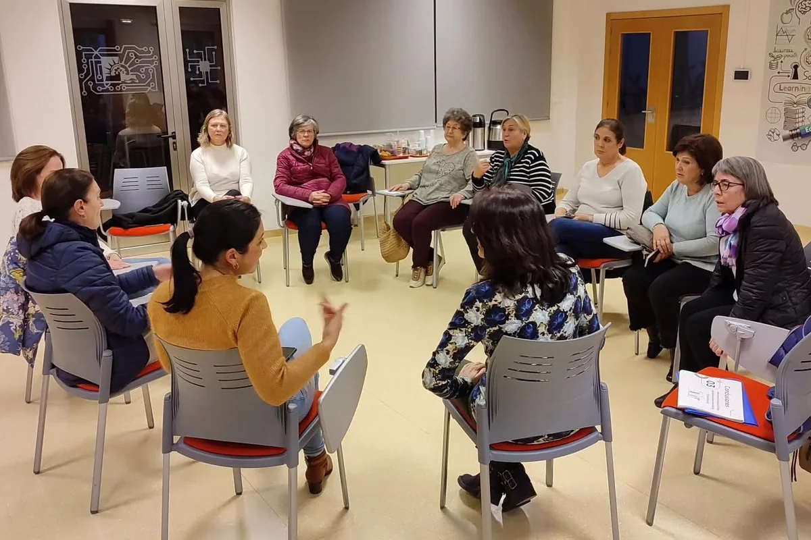
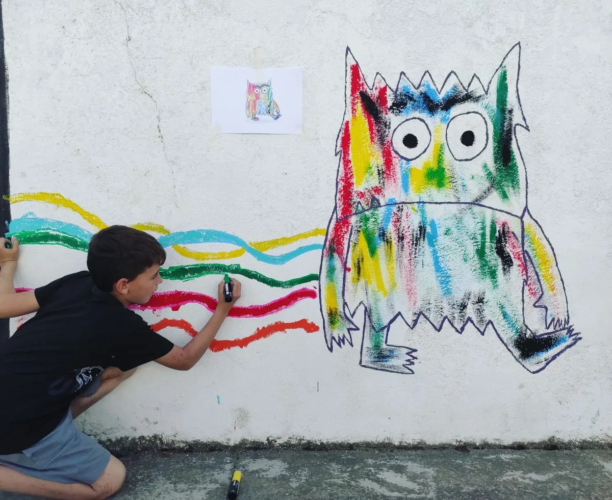
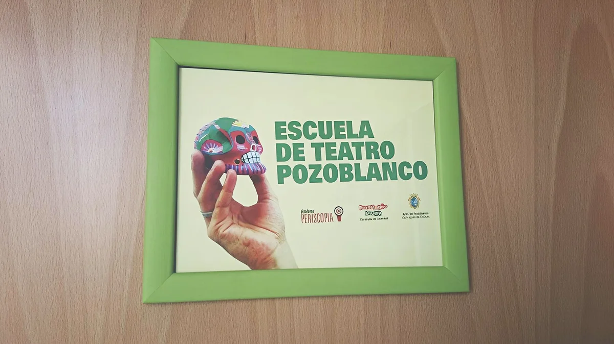
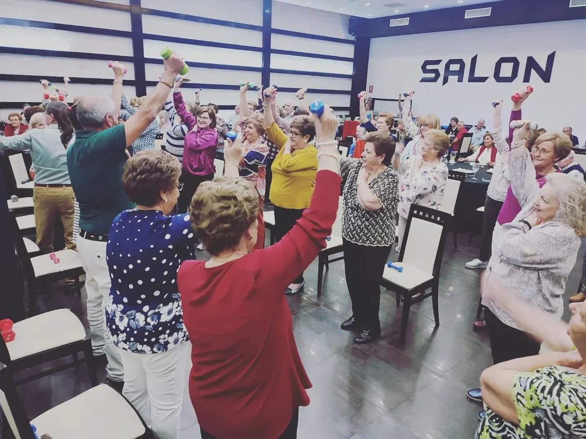

Acompañamos a su entidad en todo el ciclo de vida del proyecto, desde la planificación y ejecución directa hasta la justificación administrativa final.
Asistencia técnica integral en el diseño, gestión y ejecución de Semanas del Mayor en colaboración con el Instituto Provincial de Bienestar Social de la Diputación de Córdoba.
Pedroche · Desde 2020
Semana del Mayor
Asistencia técnica integral en el diseño, gestión y ejecución de Semanas del Mayor en colaboración con el Instituto Provincial de Bienestar Social de la Diputación de Córdoba.
Más trabajos

Pozoblanco · 2024
Visitas Dinamizadas

Villanueva de Córdoba · 2024
Talleres Adolescentes

Añora · 2025
Participación Ciudadana

Santa Eufemia · 2025
Mural Colaborativo

Pozoblanco · 2014–2019
Escuela de Teatro

El Viso · 2024
Convivencia de Mayores
Formas de colaboración
Proyecto completo
Diseñamos, organizamos y ejecutamos todo el proyecto.
Una parte del proyecto
Asumimos una fase o tarea concreta del proyecto.
Actividad del catálogo
Incorporamos una actividad a su programación o proyecto.